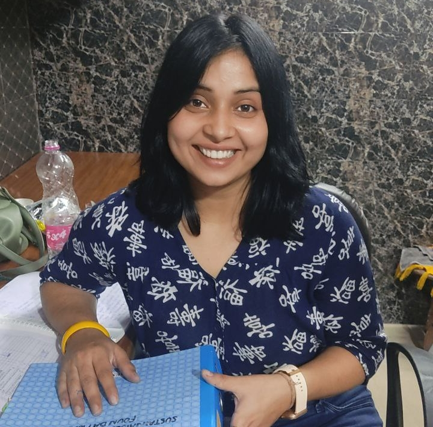
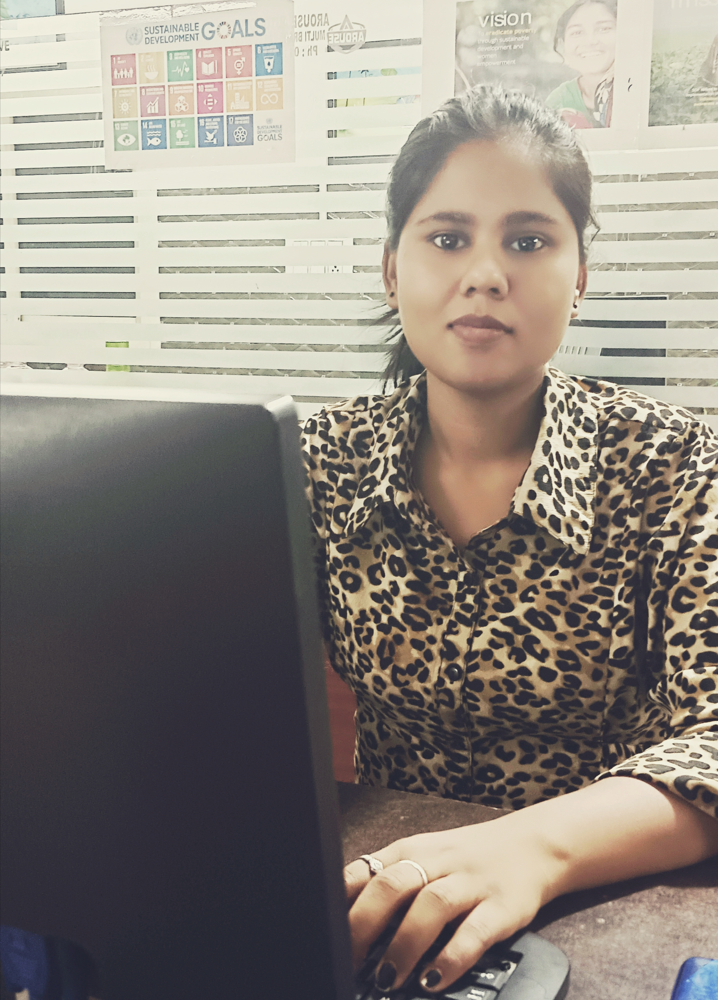

Ms. Banaja is MA in Sociology and MA in Classical Musing and the Executive Trustee/ Secretary of SDF Trust and having 19 years working experience in NGO sector on issues like Health, Livelihood, Education, Child Protection and Women Empowerment and also served in National level NGO, Government Agency and International Organizations i.e CARA, CART, UN, Global Fund, WAFD. Currently serving as Chief Executive Officer of SDF Trust and .

Banaja Mishra
CEO
.png)
Hamid Malik
Project Director
Mr. Hamid is MA in Sociology and having 12 years working experience in NGO sector on issues like Health, Livelihood and Women Empowerment, Refugee and also served in National and International Organizations i.e MATRIX, Global Fund and UNHCR. Currently serving as Program Director of SDF Trust.
.png)
Ms. Smita
Executive Officer
Ms. Smita is MSW and is the Trustee of SDF Trust and having 8 years working experience in NGO sector on issues like Women Empowerment, Gender violence and Panchayati Raj. Currently working in a MP based NGO.

Sarvjeet Singh
Consultant
Mr. Sarvjeet is associated with SDF as consultant, he worked for the CARA and various Govt. department as consultant and having 12 years experties in development sector and advisor to many indian NGOs.

Sheetal Saini
Project Manager
Sheetal currently working as Project Manager in SDF Trsut, she MA in Social Work and having 5 years field level experience on various issues i.e Health, Education and Gender Violence, besides that she has vast experience in Planning Monitoring Evaluation and Implementation.
.jpg)
Nidhi Kumari
Documentation Officer
Ms. Nidhi, is graduated in B.Sc Physics honours & she did many volunteer works for various hematic issues i.e; Health, Education & Child Care, besides that Nidhi holds vast experience in developing websites and evidence based documents.

Kajal
Program Assistent
Kajal associated with SDF since last couple of months, she is very good in group councling as well as individual councling and also holds good report at community level and currently working as program Assistent in our SAMPARC Project.